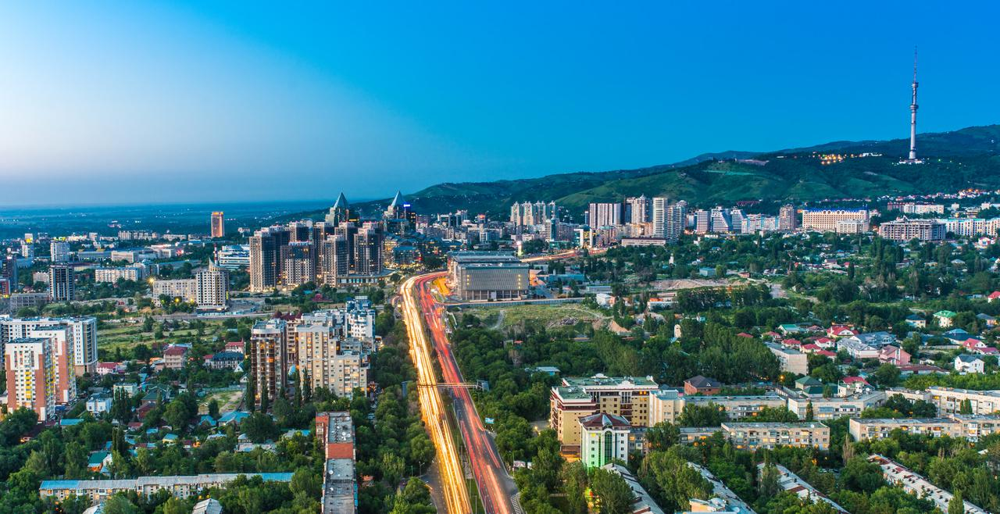

Almaty is a city of republican significance and the largest settlement in the Republic of Kazakhstan. It had been the capital of Kazakhstan for almost 70 years. Today Almaty is called the “southern capital” because, in terms of the intensity of economic, social, and cultural life, it is really a capital city.
Located in southeast Kazakhstan at the foot of the Zailiyskiy Alatau branch of the Tian Shan Mountains, the city is naturally divided into upper and lower sections. There is a joke that every citizen of Almaty can travel to any city in the world and divide it into “upper and lower”, and there is some truth to this claim.
More information about the tourism in Almaty can be found on the Website of Akimat of the city of Almaty.